Case study UI UX
To suit the needs of our new Integrated Marketing user base, I partnered with the Director of UX at NewsCred (Optimizely CMP) to redesign the home screen experience, shifting from content-centric analytics and optimization to task-oriented actions.
Property of NewsCred (Optimizely CMP), in collaboration with Pei Chien and Alena Gribskov
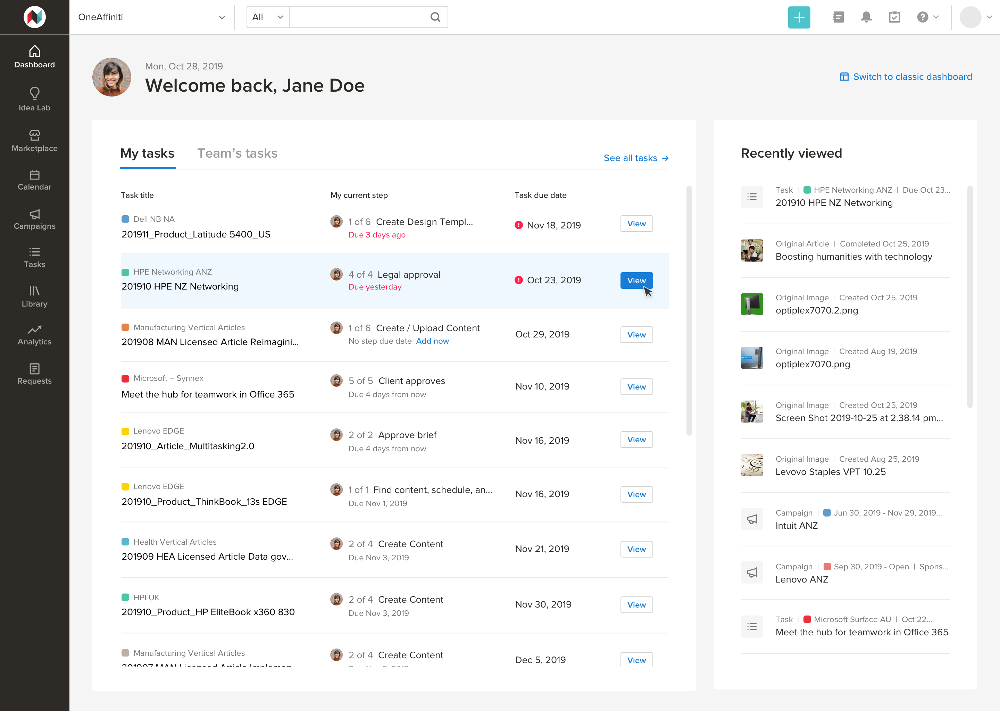
In Q4 2018, NewsCred made the strategic decision to broaden its platform's functionality. The enterprise SaaS company had cemented its position as industry-leader in the content marketing category, but there was increasing market demand for a platform that would also serve as an operating system for global marketing teams. This new platform would not only allow content marketers to plan, find and publish content, facilitate workflows, and measure results, but also enable global teams to collaborate, manage budgets, govern user roles and permissions, measure operational efficiency, and enforce unified taxonomies across teams. We responded to those demands by embarking on a journey to build what marketers truly needed.
Months before the company's announcement, we began noticing patterns in customer feedback. There were an increasing number of requests for an improved dashboard, where users could isolate their tasks and quickly take action. An analysis of our competitors' platforms also informed our squad there was room for improvement in surfacing relevant, tailored, information right from the homepage.
To further understand how our existing dashboard was being used, we dove into the analytics. Despite being the most visited area of the platform (it saw 40% more visitors than the second-most visited area), our old dashboard had the least amount of time spent in any area other than Settings (about three minutes total per week for external users and four and a half minutes for internal users). We suspected low usage was a result of the dashboard's widgets not being targeted towards a particular persona's interests and needs — a hypothesis we sought to validate.
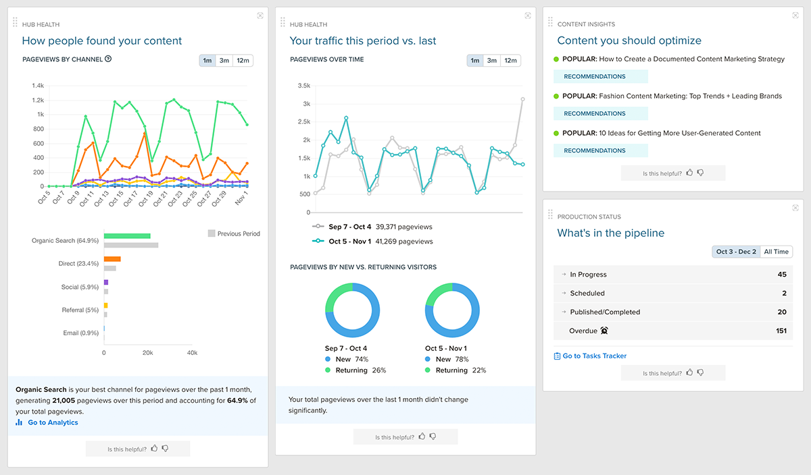
Since the dashboard has such high visiblity and opportunity for impact, it was an exciting challenge to begin working on. The first step was to find out what information should be displayed and prioritized. To understand this, our UX Director led an interactive workshop where members of our Customer Success, Sales, Marketing, and Leadership teams were asked to create the ideal dashboard, based on direct feedback they received from customers and prospects, and how they used the product themselves. Our UX Director distributed paper, scissors, and a marker, and asked participants to either choose from a library of widgets, or draw custom widgets, that would help them work more efficiently. They were then asked to arrange them on a sheet of paper to create their perfect dashboard. At the end of the exercise, we went around the room to discuss why they chose what they chose and how it would help their clients.
This exercise was not only fun for the participants, it proved to be extremely valuable. During a productive discussion, we learned to focus on two user personas: the Manager, who is overseeing the work, and the Contributor, who is doing the work. In addition, we were able to compile a list of the eight most commonly-requested widgets.
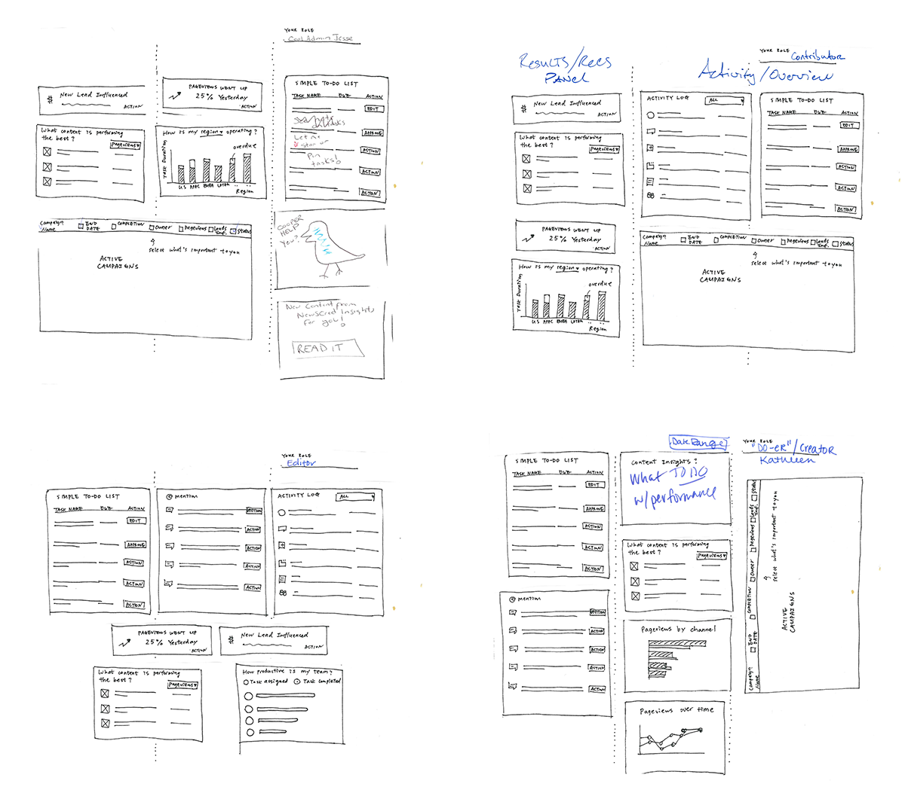
The next step was to produce low-fidelity wireframes, based on our insights from the workshop, and gather feedback. We conducted remote unmoderated and remote moderated user interviews, leveraging UsabilityHub as well as joining customer calls with our Customer Success team to speak to our users directly. After providing appropriate context, we asked qualitative questions like "Looking at this dashboard, what action would you take first?", "What are you not seeing here that would help you get more work done, faster?", and "What would you expect to happen if you clicked [X]?" These questions helped us understand how useful the new content was, and the responses informed our iterations as we moved forward with additional wireframes.
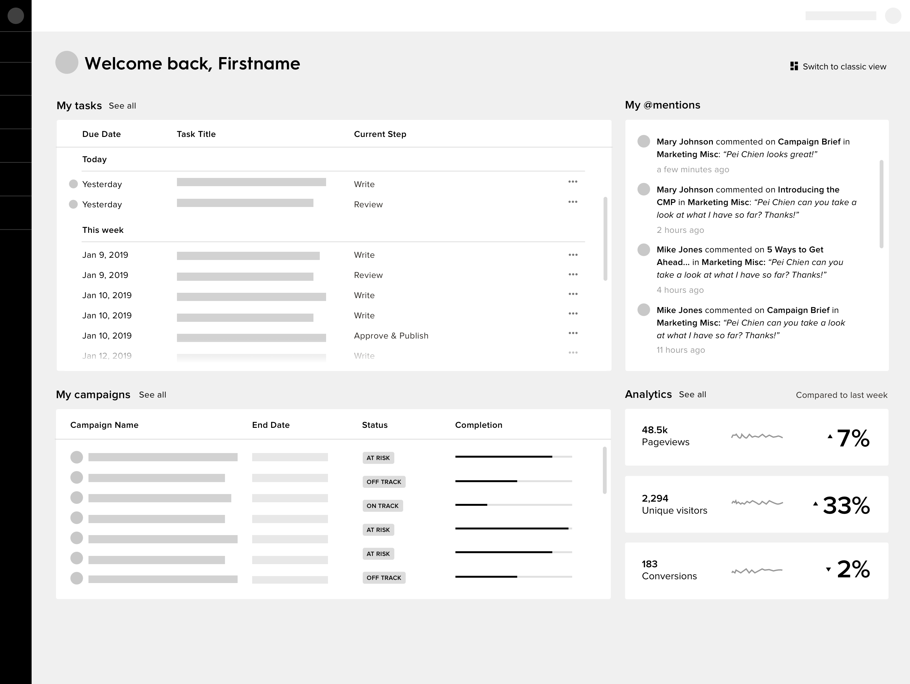
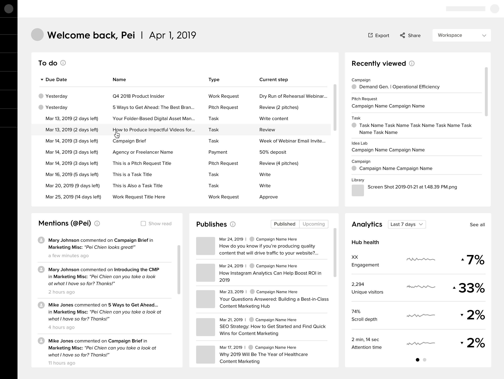
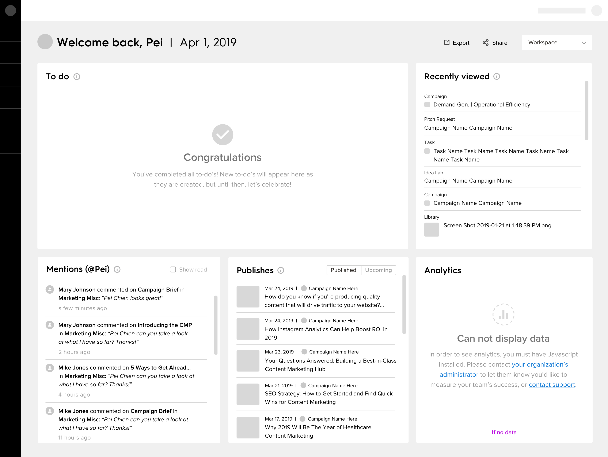
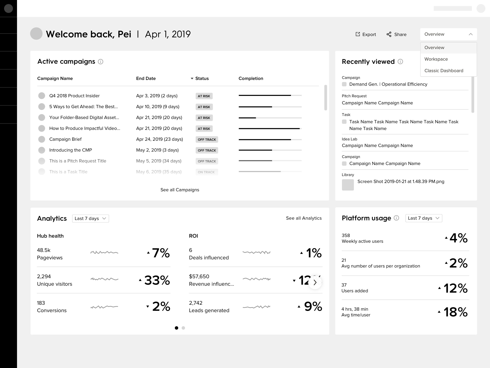
While the new widgets proved useful, the majority of the feedback was centered around prioritizing only a couple of them. Upon logging into the platform, users simply wanted to quickly understand 1) what they needed to work on (and which tasks were most urgent), 2) how their team's work was affecting theirs, and 3) how their work was affecting their team's. Taking this into consideration, the squad decided to prioritize the two most demanded widgets for the MVP. We agreed that once the new dashboard was in production, we would gather data to understand how it was used and continue to iterate by including additional widgets, the ability to customize and reconfigure the page, and switch views according to persona.
The most recent design provides the user with 'Tasks' and 'Recently Viewed' widgets. The Tasks widget includes tabs for "My Tasks," which allows the user to view only tasks where the current step in a workflow is assigned to them. The most urgent tasks are always at the top, prioritizing overdue and off track tasks. It also includes a "Team's Tasks" tab of the list, which displays all tasks where the current step in a workflow is assigned to a teammate of the user. This way, the user can take a quick glance at all tasks they are associated with, and parse the information in order to understand their responsibilities. The second widget is 'Recently Viewed,'' which, like many online platforms, surfaces objects the user most recently accessed. Our software has a deep architecture, so it's easy to lose track of where something is — we think a list of items the user most recently visited will help solve this problem. We are currently considering a 'Favorited' widget in lieu of 'Recently Viewed,' as we have received some feedback that it may be more valuable to quickly access objects a user has proactively deemed important to them.
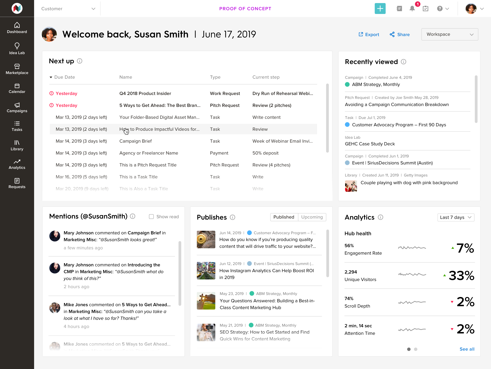
An early, medium-fidelity version of the dashboard we showed to a prospect. We were told it was too noisy and users weren't sure what to look at or how to act.
"My Tasks" tab — in a collaborative, team-oriented, efficiency-centric environment, users can quickly visualize and understand what is on their plate and which of those tasks is most urgent.
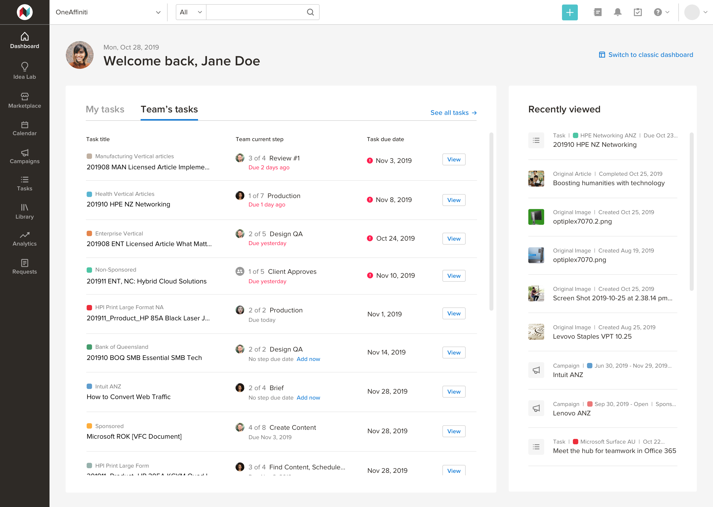
"Team's Tasks" tab — users can understand the current workflow step their team members are working on.
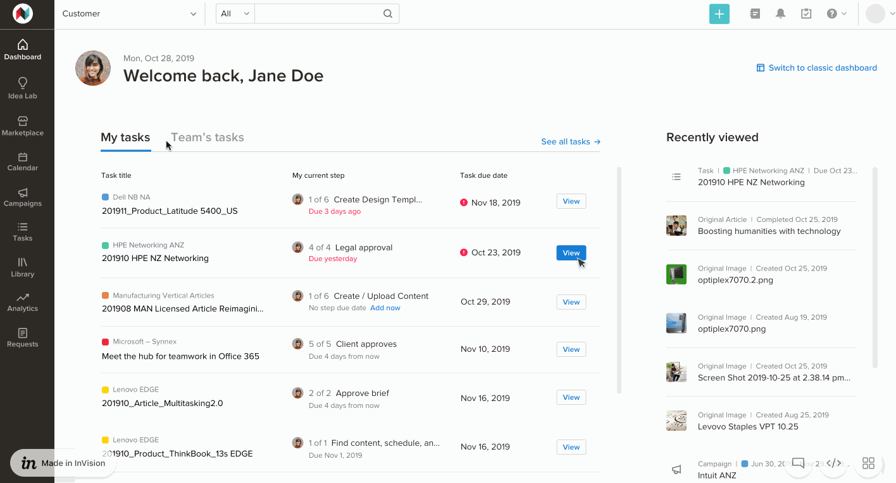
Prototype showing content changing when the user changes tabs.
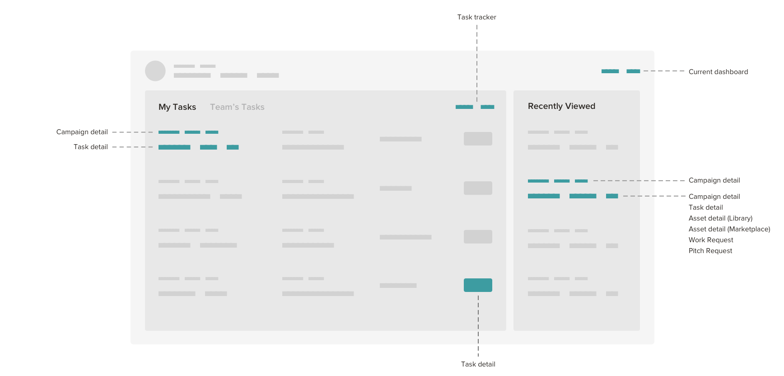
Link map to understand how the new dashboard affects other areas of the platform.